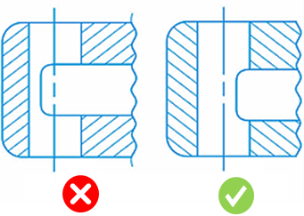
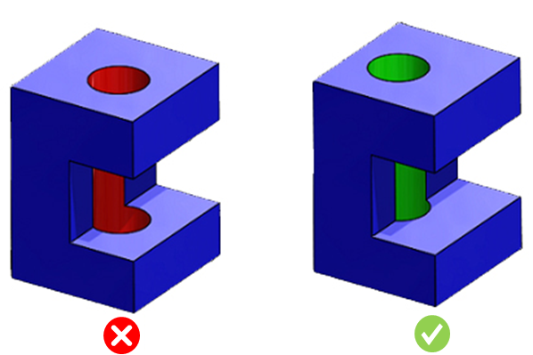
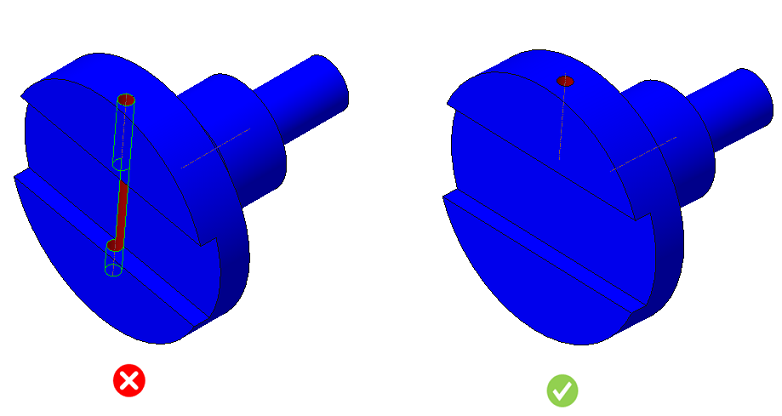

キャビティと部分的または完全に交差するドリル穴の設計は避けてください。
加工中にキャビティと交差すると、ドリルは抵抗の最も小さい経路を進もうとします。その結果、材料に再進入する際にドリルが蛇行する可能性が高くなります。また、ドリルが片側で別の開口部と交差する場合、たわみが発生します。過度なたわみやドリル破損の可能性を避けるため、ドリルの進入点は切削中を通して常に材料内にある必要があります。
穴はキャビティと交差させないでください。
交差が避けられない場合でも、少なくとも穴の軸はキャビティの外側に配置してください。

本ルールは、ドリル穴がキャビティと交差しているかどうかをチェックします。そのため、構成情報は不要です。


注記:
ドリル工具はデータベースで構成されています。ルールマネージャーダイアログボックスでドリル径を確認するには、標準穴径を編集してください。
最大ドリル工具径は、標準穴径ルール構成で選択されている単位選択オプションに基づいて解析に考慮されます。
同軸穴の場合、空隙が穴径の2倍を超えると、結果はアラートとして分類されます。